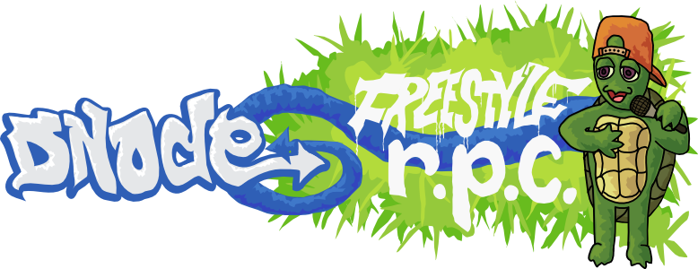

Yahoo! Open Hack India 2012
How to Win with Node.js
by @reid
JavaScript
Prototype-based, object-oriented scripting language.
- Web sites
- Widgets
- Browser extensions
Most popular language on GitHub: https://github.com/languages
JavaScript Everywhere
JavaScript isn’t found on just websites.
- Television sets via Yahoo! Connected TV
- Universal remote controls
- Realtime stock trading apps
Finally, there's Server-Side JavaScript.
Server-Side JavaScript
Started in 1996: Netscape LiveWire.
Refined since then: AppJet, EtherPad, CommonJS.
Used in Yahoo!’s YQL.
Evented I/O for JavaScript.
Node.js
Evented I/O for V8 JavaScript.
Easily create scalable network apps, like web servers.
Created in 2009.
Uses the V8 JavaScript engine from Google.
Node.js is used by Joyent, Yahoo!, Microsoft, LinkedIn, Uber, Mozilla, Voxer, AT&T & your hack.
Hello, world!
var http = require('http');
http.createServer(
function (request, response) {
response.writeHead(200,
{'Content-Type': 'text/plain'});
response.end('Hello World\n');
}).listen(8000);
console.log('Started at
http://127.0.0.1:8000/');
Installing
Easy installers for Windows and OS X.
Easily compiled from source on Linux and Solaris.
Node.js Package Manager
Bundled with Node.js.
The package manager for Node.js modules.
npm install modulename
var foo = require('modulename');
Play
Type node to start a REPL.
$ node
> console.log('Hello, Bangalore!');
Hello, Bangalore!
Control-D to quit.
Start a script file with node script.js.
What can I build with this?
Realtime web apps.
SockJS
npm install sockjs
Cross-browser WebSockets. http://sockjs.org
<script src="http://cdn.sockjs.org/sockjs-0.3.min.js">
</script><script>
var sock = new SockJS("http://hackday.org/tower");
sock.onopen = function(){ … });
sock.onmessage = function(ev){ … });
sock.onclose = function(){ … });
</script>
DNode
npm install dnode
Freestyle RPC between Node.js, the browser, Perl, Ruby and Java.

Realtime apps
- Games: massively-multiplayer is easy!
- Chatroom
- Shared whiteboard
- Live stock quotes
- Streaming charts with http://smoothiecharts.org/
- Your hack
Web Site Frameworks
Node.js is not a web server, it’s a framework to make one.
Many projects exist to help build a web site.
Connect
npm install connect
Low-level middleware stack for creating HTTP servers.
Express
npm install express
var express = require('express');
var app = express();
app.get('/', function(req, res){
res.send('Hello, Bangalore!');
});
app.listen(3000);
Router, view rendering, configuration, etc.
Debugger
npm install node-inspector
Works for any Node.js program. Handy!
node --debug-brk app.js
node-inspector
You can now debug your app in WebKit browser.
node --debug # Enable debug mode
node --debug-brk # Break on startup
Understand the API.
Node.js API
http://nodejs.org/docs/latest/api/
- HTTP, UDP, DNS, TLS/SSL, Crypto, File System
- Streams: powerful concept used everywhere
- Child process spawning
- Events
-
.onvs..once -
.removeListener - Buffers: fast way to handle large data
- Much more
Avoid nested callbacks.
Callbacks
var file = "/etc/redhat-release";
fs.stat(file, function(err, stat) {
if (stat.isFile()) {
fs.readFile(file, function(err, file) {
postRequest("http://example.com", file, function (err, response) {
if (response.status === 200) {
db.save(file, function (err) {
next();
});
}
});
});
}
});
Better Callbacks
var file = "/etc/redhat-release";
function onPost(err, response) {
if (response.status !== 200) throw err;
db.save(file, next);
}
function onRead(err, file) {
postRequest("http://example.com", file, onPost);
}
function onStat(err, stat) {
if (stat.isFile()) fs.readFile(file, onRead);
}
fs.stat(file, onStat);
Put some Client-Side on your Server-Side!
jsdom
npm install jsdom
Implementation of the W3C DOM. Headless browser!
var jsdom = require("jsdom");
jsdom.env("http://nodejs.org/dist/", [
'http://yui.yahooapis.com/3.5.0/build/simpleyui/simpleyui-min.js'
], function(errors, window) {
console.log("there have been",
window.Y.all("a").size(),
"nodejs releases!");
});

YUI is seriously awesome.
Hack stuff fast on your server or browser. Don’t miss the YUI workshop later today.
YUI on Node.js
npm install yui3
Run YUI on Node.js!
https://github.com/davglass/nodejs-yui3
High-performance, device-independent HTML5 applications with Yahoo! Mojito.
Talk to the real world.
Serialport
eeeee eeeee eeeee eeee e eeeee
8 8 8 88 8 8 8 8 8 "
8e 8 8 8 8e 8 8eee 8e 8eeee
88 8 8 8 88 8 88 e 88 88
88 8 8eee8 88ee8 88ee 88 8ee88 8ee88
eeeee eeee eeeee e eeeee e eeeee eeeee eeeee eeeee
8 " 8 8 8 8 8 8 8 8 8 8 88 8 8 8
8eeee 8eee 8eee8e 8e 8eee8 8e 8eee8 8 8 8eee8e 8e
88 88 88 8 88 88 8 88 88 8 8 88 8 88
8ee88 88ee 88 8 88 88 8 88eee 88 8eee8 88 8 88
npm install serialport
Talk to physical devices, like an Arduino.
- Interact with sensors
- Write to LED displays
- Physical controls: dials, switches, etc.
Node.js and Hardware
- Hardware MIDI controller: <http://tmpvar.com/project/tmpad/>
- Using a physical dial to seek a YouTube video synced to many devices: <http://popcornjs.com/>
- Control a R/C boat from a web browser: <http://bit.ly/nodeboat>
- Make your robot detect and avoid obstacles: <http://youtu.be/GVGMjsKy3WQ>
- Taking JSON from YQL and writing it to a LED matrix.
How to Win with Node.js
- Reid Burke Yahoo! Inc.
- hackday@reid.in
- Follow @reid or visit reid.in
See you at the YUI workshop!
About this slideshow
- Slideshow source: https://github.com/reid/decks
- Slideshow system based on YUI 3: https://github.com/reid/upstage